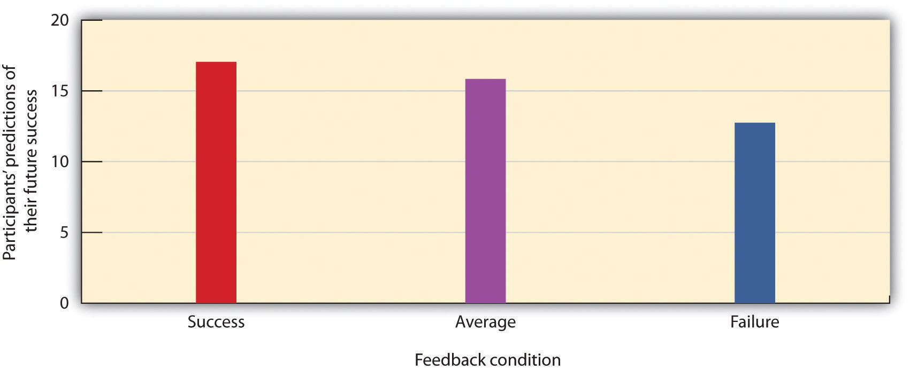
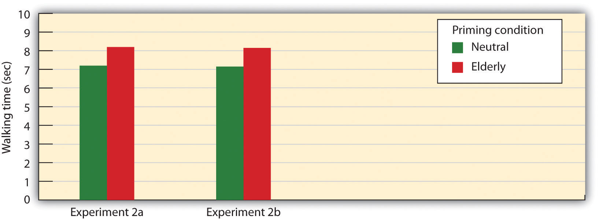
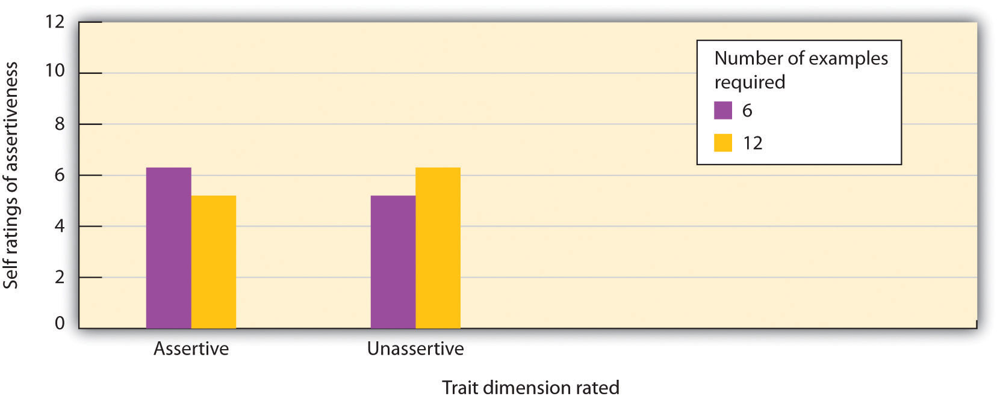
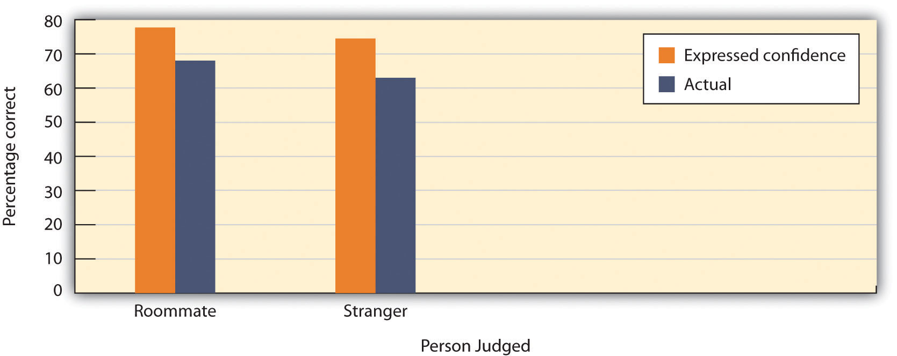
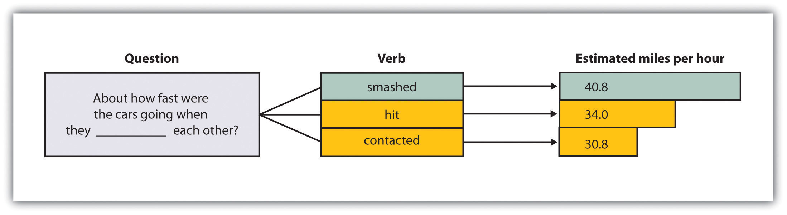

Rickie Johnson was freed from prison in Louisiana on January 14, 2008, after serving 26 years in prison for a crime he did not commit.
Photo courtesy of Greg Pearson Photography.
On July 12, 1982, a woman in northwest Louisiana was held at gunpoint and raped. During the four hours that the rapist stayed in her house, he identified himself as Marcus Johnson from Leesville, Louisiana.
When the victim reported the attack, the police could find no information about a Marcus Johnson, but they did find a Rickie Johnson who had once been arrested on a minor traffic charge. Mr. Johnson became the only suspect in the case.
The victim was shown a photo lineup of three men who were listed as potential perpetrators, although the image of Johnson was eight years old. The victim identified Johnson as the perpetrator, even though he looked very little like the description she had given of the attacker after the rape.
Johnson was charged with aggravated sexual assault and was tried in Sabine Parish, Louisiana. During the trial the victim told the jury that she was “positive” that he was the perpetrator and there was “no question in [her] mind.”
In 2007, however, Johnson’s innocence was determined with forensic DNA testing, a technology that was not available at the time of the crime.
Rickie Johnson’s case is only one of many recent DNA exonerations, most of which stem from eyewitness misidentifications. In fact, eyewitness misidentification is the single greatest cause of wrongful convictions. Over the past 10 years, almost 400 people have been released from prison when DNA evidence confirmed that they could not have committed the crime for which they had been convicted. And in more than three-quarters of these cases, the cause of the innocent people being falsely convicted was erroneous eyewitness testimony (Wells, Memon, & Penrod, 2006).Wells, G. L., Memon, A., & Penrod, S. D. (2006). Eyewitness evidence: Improving its probative value. Psychological Science in the Public Interest, 7(2), 45–75.
According to the Innocence Project (http://www.innocenceproject.org), “The human mind is not like a tape recorder; we neither record events exactly as we see them, nor recall them like a tape that has been rewound.”
In October 1999, the U.S. Department of Justice released the first national guide for collecting and preserving eyewitness evidence. The guide was commissioned by U.S. Attorney General Janet Reno (http://www.wic.org/bio/jreno.htm) and consisted of a panel of experts, including social psychologist Gary Wells (http://www.psychology.iastate.edu/~glwells/bio2001.html), the world’s foremost authority on the psychology of eyewitness identification.
Although being able to correctly identify the perpetrator of a crime that we have observed is fortunately not part of our everyday social activities, we do need to be able to accurately learn about the people that we interact with every day. Our remarkable abilities to size up and remember other people are enhanced by our affective and cognitive capacities. In this chapter, our focus will be on cognition, and we will consider how we learn about, remember information about, and judge others (Fiske & Taylor, 2007; Macrae & Quadflieg, 2010).Fiske, S. T., & Taylor, S. E. (2007). Social cognition, from brains to culture. New York, NY: McGraw-Hill; Macrae, C. N., & Quadflieg, S. (2010). Perceiving people. In S. T. Fiske, D. T. Gilbert, & G. Lindzey (Eds.), Handbook of social psychology (5th ed., Vol. 1, pp. 428–463). Hoboken, NJ: John Wiley & Sons. Then, in Chapter 3 "Social Affect", we will turn to a focus on the role of affect in these same processes.
Most generally, this chapter is about social cognitionMental activity that relates to social activities and helps us meet the goal of understanding and predicting the behavior of ourselves and others., the mental activity that relates to social activities and helps us meet the goal of understanding and predicting the behavior of ourselves and others. A fundamental part of social cognition involves learningRelatively permanent change in knowledge that is acquired through experience.—the relatively permanent change in knowledge that is acquired through experience. We will see that a good part of our learning and our judgments of other people operates out of our awareness—we are profoundly affected by things that we do not know are influencing us. But we also consciously think about and analyze our lives and our relationships with others, seeking out the best ways to fulfill our goals and aspirations.
As we investigate the role of cognition in everyday life, we’ll consider the ways that people use their cognitive abilities to make good decisions and to inform their behavior in a useful and accurate way. We’ll also consider the potential for mistakes and biases in human judgment. We’ll see that although we are generally pretty good at sizing up other people and creating effective social interactions, we are not perfect. And we’ll see that the errors we make frequently occur because of our reliance on our schemas and attitudes and a general tendency to take shortcuts through the use of cognitive heuristicsAn information-processing rule of thumb that enables us to think in ways that are quick and easy but may sometimes lead to error.: information-processing rules of thumb that enable us to think in ways that are quick and easy but that may sometimes lead to error. In short, although our cognitive abilities are “good enough,” there are definitely some things we could do better.
Human beings have very large brains and highly developed cognitive capacities. Thus it will come as no surprise that we meet the challenges that we face in everyday life largely by thinking about them and then planning what to do about them. Over time, people develop a huge amount of knowledge about the self, other people, social relationships, and social groups. This knowledge guides our responses to the people we interact with every day.
People have many memories about their experiences with other people, and they use this information to make predictions about what people will do in the future. This knowledge is gained through learning. The study of learning is closely associated with the behaviorist school of psychology, which includes the psychologists John B. Watson and B. F. Skinner. For behaviorists, the fundamental aspect of learning is the process of conditioningThe ability to connect stimuli (the changes that occur in the environment) with responses (behaviors or other actions).—the ability to connect stimuli (the changes that occur in the environment) with responses (behaviors or other actions). The behaviorists described two types of conditioning that are particularly important in behaviorism: operant conditioning (also known as instrumental conditioning) and classical conditioning (also known as respondent conditioning). When applied to human behavior, these two processes are frequently called, respectively, operant learning and associational learning.
If a child touches a hot radiator, she quickly learns that the radiator is dangerous and is not likely to touch it again. If we have unpleasant experiences with people from a certain state or country, or a positive relationship with a person who has blonde hair or green eyes, we may develop negative or positive attitudes about people with these particular characteristics and attempt to reduce or increase our interactions with them. These changes in our understanding of our environments represent operant learningThe principle that experiences that are followed by positive emotions (reinforcements or rewards) are likely to be repeated, whereas experiences that are followed by negative emotions (punishments) are less likely to be repeated.—the principle that we learn new information as a result of the consequences of our behavior. According to operant learning principles, experiences that are followed by positive emotions (reinforcements or rewards) are likely to be repeated, whereas experiences that are followed by negative emotions (punishments) are less likely to be repeated. In operant learning, the person learns from the consequences of his or her own actions.
Although its principles are very simple, operant learning is probably the most important form of human learning. Operant learning occurs when a schoolroom bully threatens his classmates because doing so allows him to get his way, when a child gets good grades because her parents threaten to punish her if she doesn’t, when we begin to like someone who smiles at us frequently, and in hundreds of other cases every day. Operant learning can also be used to explain how people learn complex behaviors, such as how to read, and to understand complex social behaviors, such as the development of social norms and culture.
The application of operant learning to social psychology is straightforward: How do we know which behaviors are most appropriate in a social situation? We learn, in part, because we have positively reinforced for engaging in the appropriate ones and negatively reinforced for engaging in the inappropriate ones. It does not take us long to learn that Margette is more likely to give us the kiss we have been hoping for if we are nice to her or that our children are more likely to share their toys with others if we reward them for doing it. Operant learning has even been used to explain why some people choose to become criminals. According to this approach, criminal behavior is determined by the reinforcements and punishments that the individual experiences (e.g., with peers and with parents) as a result of his or her behavior (Akers, 1998).Akers, R. L. (1998). Social learning and social structure: A general theory of crime and deviance. Boston, MA: Northeastern University Press.
Associational learningLearning that occurs when an object or event comes to be associated with a natural response, such as an automatic behavior or a positive or negative emotion. occurs when an object or event comes to be associated with a natural response, such as an automatic behavior or a positive or negative emotion. If you’ve ever become hungry when you drive by one of your favorite pizza stores, it is probably because the sight of the pizzeria has become associated with your experiences of enjoying the pizzas. We may enjoy smoking cigarettes, drinking coffee, and eating not only because they give us pleasure themselves but also because they have been associated with pleasant social experiences in the past.
Associational learning also influences our knowledge and judgments about other people. For instance, research has shown that people view men and women who are seen alongside other people who are attractive, or who are said to have attractive girlfriends or boyfriends, more favorably than they do the same people who are seen alongside more average-looking others (Sigall & Landy, 1973).Sigall, H., & Landy, D. (1973). Radiating beauty: Effects of having a physically attractive partner on person perception. Journal of Personality and Social Psychology, 28(2), 218–224. This liking is due to associational learning—we have positive feelings toward the people simply because those people are associated with the positive features of the attractive others.
Associational learning has long been, and continues to be, an effective tool in marketing and advertising (Hawkins, Best, & Coney, 1998).Hawkins, D., Best, R., & Coney, K. (1998.) Consumer behavior: Building marketing strategy (7th ed.). Boston, MA: McGraw-Hill The general idea is to create an advertisement that has positive features so that it creates enjoyment in the person exposed to it. Because the product being advertised is mentioned in the ad, it becomes associated with the positive feelings that the ad creates. In the end, if everything has gone well, seeing the product online or in a store will then create a positive response in the buyer, leading him or her to be more likely to purchase the product.
Can you determine how associational learning is being used in these ads?
A similar strategy is used by corporations that sponsor teams or events. For instance, if people enjoy watching a college basketball team playing basketball, and if that team is sponsored by a product, such as Pepsi, then people may end up experiencing positive feelings when they view a can of Pepsi. Of course, the sponsor wants to sponsor only good teams and good athletes because these create more pleasurable responses.
Advertisers use a variety of techniques to create positive advertisements, including enjoyable music, cute babies, attractive models, and funny spokespeople. In one study, Gorn (1982)Gorn, G. J. (1982). The effects of music in advertising on choice behavior: A classical conditioning approach. Journal of Marketing, 46(1), 94–101. showed research participants pictures of writing pens of different colors, but paired one of the pens with pleasant music and another with unpleasant music. When given a choice as a free gift, more people chose the pen that had been associated with the pleasant music. In another study, Schemer, Matthes, Wirth, and Textor (2008)Schemer, C., Matthes, J. R., Wirth, W., & Textor, S. (2008). Does “passing the Courvoisier” always pay off? Positive and negative evaluative conditioning effects of brand placements in music videos. Psychology & Marketing, 25(10), 923–943. found that people were more interested in products that had been embedded in music videos of artists that they liked and less likely to be interested when the products were in videos featuring artists that they did not like.
Another type of ad that is based on principles of classical conditioning is one that associates fear with the use of a product or behavior, such as those that show pictures of deadly automobile accidents to encourage seatbelt use or images of lung cancer surgery to discourage smoking. These ads have also been found to be effective (Das, de Wit, & Stroebe, 2003; Perloff, 2003; Witte & Allen, 2000),Das, E. H. H. J., de Wit, J. B. F., & Stroebe, W. (2003). Fear appeals motivate acceptance of action recommendations: Evidence for a positive bias in the processing of persuasive messages. Personality and Social Psychology Bulletin, 29(5), 650–664; Perloff, R. M. (2003). The dynamics of persuasion: Communication and attitudes in the 21st century (2nd ed.). Mahwah, NJ: Lawrence Erlbaum Associates; Witte, K., & Allen, M. (2000). A meta-analysis of fear appeals: Implications for effective public health campaigns. Health Education & Behavior, 27(5), 591–615. largely because of conditioning.
Recently, the U.S. government created new negative and graphic images to place on cigarette packs in order to increase an association between negative responses and cigarettes. The idea is that when we see a cigarette and the fear of dying is associated with it, we will be less likely to light up.

The goal of these images is to associate the fear of dying with cigarette smoking.
Taken together then, research studies provide ample evidence of the utility of associational learning in advertising, in ads using positive stimuli and in those using negative stimuli. This does not mean, however, that we are always influenced by these ads. The likelihood that associational learning will be successful is greater when we do not know much about the products, where the differences between products are relatively minor, and when we do not think too carefully about the choices (Schemer et al., 2008).Schemer, C., Matthes, J. R., Wirth, W., & Textor, S. (2008). Does “passing the Courvoisier” always pay off? Positive and negative evaluative conditioning effects of brand placements in music videos. Psychology & Marketing, 25(10), 923–943.
Associational learning is also implicated in the development of unfair and unjustified racial prejudices. We may dislike people from certain racial or ethnic groups because we frequently see them portrayed in the media as associated with violence, drug use, or terrorism. And we may avoid people with certain physical characteristics simply because they remind us of other people we do not like.
Lewicki (1985)Lewicki, P. (1985). Nonconscious biasing effects of single instances on subsequent judgments. Journal of Personality and Social Psychology, 48, 563–574. conducted research that demonstrated the influence of associational learning and how quickly and easily such learning can happen. In his experiment, high school students first had a brief interaction with a female experimenter who had short hair and wore glasses. The study was set up so that the students had to ask the experimenter a question, and (according to random assignment) the experimenter responded in either a negative way or a neutral way toward the participants. Then the students were told to go into a second room in which two experimenters were present and to approach either one of them. The researchers arranged it so that one of the two experimenters looked a lot like the original experimenter and the other one did not (she had longer hair and did not wear glasses). The students were significantly more likely to avoid the experimenter who looked like the original experimenter when that experimenter had been negative to them than when she had treated them neutrally. As a result of associational learning, the negative behavior of the first experimenter unfairly “rubbed off” onto the second.
Donal Carlston and his colleagues (Mae & Carlston, 2005; Skowronski, Carlston, Mae, & Crawford, 1998)Mae, L., & Carlston, D. E. (2005). Hoist on your own petard: When prejudiced remarks are recognized and backfire on speakers. Journal of Experimental Social Psychology, 41(3), 240–255; Skowronski, J. J., Carlston, D. E., Mae, L., & Crawford, M. T. (1998). Spontaneous trait transference: Communicators take on the qualities they describe in others. Journal of Personality and Social Psychology, 74(4), 837–848. discovered still another way that associational learning can occur: When we say good or bad things about another person in public, the people who hear us say these things associate those characteristics with us, such that they like people who say positive things and dislike people who say negative things. The moral is clear—associational learning is powerful, so be careful what you do and say.
In addition to operant and associational learning, people learn by observing the behavior of others. This is known as observational learning (modeling)Learning that occurs through exposure to the behavior of others.. To demonstrate the importance of observational learning in children, Bandura and Walters (1959)Bandura, A., & Walters, R. H. (1959). Adolescent aggression. New York, NY: Ronald Press. made a film of a young woman beating up a bobo doll—an inflatable balloon with a weight in the bottom that makes it bob back up when you knock it down. The woman violently hit the doll, shouting “sockeroo!” She also kicked it, sat on it, and hit it with a hammer.
Bandura showed his film to groups of nursery school children and then let them play in a room in which there were some really fun toys. To create some frustration in the children, Bandura let the children play with the fun toys for only a couple of minutes before taking them away. Then Bandura gave the children a chance to play with the bobo doll. You probably won’t be surprised to hear that many of the children imitated the young woman in the film. They punched the bobo doll, shouted “sockeroo,” and hit the doll with a hammer.
Bandura Discussing Clips From His Modeling Studies
(click to see video)Take a moment to see how Albert Bandura explains his research into the modeling of aggression in children.
For some of the children, the female model was shown being rewarded for engaging in the behavior, and for other children, she was punished. In support of the principles of operant learning, Bandura’s study found that the children were more likely to be aggressive when the model had been rewarded for the behavior and were less likely to be so when the model had been punished. But even the children who did not see the model receive any reward nevertheless imitated the behavior to some extent. One of the major contributions of this study is the demonstration that children learned new types of aggressive behaviors simply by observing and imitating others.
Observational learning is involved in much of our learning about our social worlds. Observational learning teaches us that Hank is friendly, that Joanna is selfish, and that Frankie has a crush on Malik. In other cases, our knowledge comes more indirectly, from what we read in books or see on TV, or from what our friends tell us, for instance.
Observational learning is useful because it allows people to learn without having to actually engage in what might be a risky behavior. As Bandura put it,
the prospects for [human] survival would be slim indeed if one could learn only by suffering the consequences of trial and error. For this reason, one does not teach children to swim, adolescents to drive automobiles, and novice medical students to perform surgery by having them discover the appropriate behavior through the consequences of their successes and failures. The more costly and hazardous the possible mistakes, the heavier is the reliance on observational learning from competent learners. (1977, p. 12).Bandura, A. (1977). Self-efficacy: Toward a unifying theory of behavior change. Psychological Review, 84, 191–215.
Bandura considered observational learning to be a fundamental determinant of all social behavior and argued that it is most likely to lead to learning when people pay attention to the behavior of models and are highly motivated to imitate the models.
The outcome of learning is knowledge, and this knowledge is stored in schemas. In the brain, our schemas reside primarily in the prefrontal cortexThe part of the brain that lies in front of the motor areas of the cortex and that helps us remember the characteristics and actions of other people, plan complex social behaviors, and coordinate our behaviors with those of others., the part of the brain that lies in front of the motor areas of the cortex and that helps us remember the characteristics and actions of other people, plan complex social behaviors, and coordinate our behaviors with those of others (Mitchell, Mason, Macrae, & Banaji, 2006).Mitchell, J. P., Mason, M. F., Macrae, C. N., & Banaji, M. R. (2006). Thinking about others: The neural substrates of social cognition. In J. T. Cacioppo, P. S. Visser, & C. L. Pickett (Eds.), Social neuroscience: People thinking about thinking people (pp. 63–82). Cambridge, MA: MIT Press. The prefrontal cortex is the “social” part of the brain. It is also the newest part of the brain, evolutionarily speaking, and has enlarged as the social relationships among humans have become more frequent, important, and complex. Demonstrating its importance in social behaviors, people with damage to the prefrontal cortex are likely to experience changes in social behaviors, including memory, personality, planning, and morality (Koenigs et al., 2007).Koenigs, M., Young, L., Adolphs, R., Tranel, D., Cushman, F., Hauser, M., & Damasio, A. (2007). Damage to the prefontal cortex increases utilitarian moral judgments. Nature, 446(7138), 908–911.

The prefrontal cortex is the area of the brain that stores information about people and about our interactions with them.
Because they represent our past experience, and because past experience is useful for prediction, our schemas serve as expectations about future events. For instance, if you have watched Italian movies or if you have visited Italy, you might have come to the conclusion that Italians frequently gesture a lot with their hands when they talk—that they are quite expressive. This knowledge will be contained in your group schema about Italians. Therefore, when you meet someone who is Italian, or even when you meet someone who reminds you of an Italian person, you may well expect that they will gesture when they talk.
Having a database of social knowledge to draw on is obviously extremely useful. If we didn’t know or couldn’t remember anything about anyone or about anything that we had encountered in the past, our life would be difficult indeed because we would continually have to start our learning over again. Our schemas allow us to better understand people and help us make sense of information, particularly when the information is unclear or ambiguous. They also allow us to “fill in the blanks” by making guesses about what other people are probably like or probably going to do in cases where things are uncertain. Furthermore, the fact that different people have different past experiences—and thus that their schemas and attitudes are different—helps explain why different people draw different conclusions about the same events.
Once they have developed, schemas influence our subsequent learning, such that the new people and situations we encounter are interpreted and understood in terms of our existing knowledge (Piaget & Inhelder, 1966; Taylor & Crocker, 1981).Piaget, J., and Inhelder, B. (1962). The psychology of the child. New York, NY: Basic Books; Taylor, S. E., & Crocker, J. (1981). Schematic bases of social information processing. In E. T. Higgins, C. P. Herman, & M. P. Zanna (Eds.), Social cognition: The Ontario symposium (Vol. 1, pp. 89–134). Hillsdale, NJ: Lawrence Erlbaum Associates. Imagine, for instance, that you have a schema—and thus an expectation—that Italians are very expressive, and you now meet Bianca, who has arrived at your school directly from Rome, Italy. You immediately expect her to be outgoing and expressive. However, as you get to know Bianca, you discover that she is not at all expressive and does not “talk with her hands.” In fact, she is quite shy and reserved. How does existing information influence how we react to the new information that we receive?
One possibility is that the new information simply updates our existing expectations. We might decide, for instance, that there is more variation among Italians in terms of expressiveness than we had previously realized, and we might resolve that Italians can sometimes be very shy and thoughtful. Or perhaps we might note that although Bianca is Italian, she is also a woman. This might lead us change our schema such that we now believe that although Italian men are expressive, Italian women are not. When existing schemas change on the basis of new information, we call the process accommodationThe process that occurs when existing schemas change on the basis of new information..
In other cases, however, we engage in assimilationThe process that occurs when existing knowledge influences new information in a way that makes the conflicting information fit with existing knowledge, thus reducing the likelihood of change., a process in which our existing knowledge influences new conflicting information to better fit with our existing knowledge, thus reducing the likelihood of schema change. If we used assimilation, instead of changing our expectations about Italians, we might try to reinterpret Bianca’s unexpected behavior to make it more consistent with our expectations. For instance, we might decide that Bianca’s behavior is actually more expressive than we thought it was at first, or that she is acting in a more shy and reserved manner because she is trying to impress us with her thoughtfulness or because she is not yet comfortable at the new school. Or we might assume that she is expressive at home with her family but not around us. In these cases, the process of assimilation has led us to process the new information about Bianca in a way that allows us to keep our existing expectations about Italians more generally intact.
As we have seen in our earlier discussion, accommodation (i.e., the changing of beliefs on the basis of new information) does occur—it is the process of learning itself. Our beliefs about Italians may well change through our encounters with Bianca. However, there are many factors that lead us to assimilate information to our expectations rather than to accommodate our expectations to fit new information. In fact, we can say that in most cases, once a schema is developed, it will be difficult to change it because the expectation leads us to process new information in ways that serve to strengthen it rather than to weaken it.
The tendency toward assimilation is so strong that it has substantial effects on our everyday social cognition. One outcome of assimilation is the confirmation biasThe tendency for people to favor information that confirms their expectations, regardless of whether the information is true.—the tendency for people to favor information that confirms their expectations, regardless of whether the information is true.
The Confirmation Bias
Consider the results of a research study conducted by Ross, Lepper, and Hubbard (1975)Ross, L., Lepper, M. R., & Hubbard, M. (1975). Perseverance in self-perception and social perception: Biased attributional processes in the debriefing paradigm. Journal of Personality & Social Psychology, 32, 880–892. that demonstrated the confirmation bias. In this research, high school students were asked to read a set of 25 pairs of cards, in which each pair supposedly contained one real and one fake suicide note. The students’ task was to examine both cards and to decide which of the two notes was written by an actual suicide victim. After the participants read each card and made their decision, the experimenter told them whether their decision was correct or incorrect. However, the feedback was not at all based on the participants’ responses. Rather, the experimenters arranged the feedback so that, on the basis of random assignment, different participants were told either that they were successful at the task (they got 24 out of 25 correct), average at the task (they got 17 out of 25 correct), or poor at the task (they got 10 out of 25 correct), regardless of their actual choices.
At this point, the experimenters stopped the experiment and completely explained to the participants what had happened, including how the feedback they had received was predetermined so that they would learn that they were either successful, average, or poor at the task. They were even shown the schedule that the experimenters had used to give them the feedback. Then the participants were asked, as a check on their reactions to the experiment, to indicate how many answers they thought they would get correct on a subsequent—and real—series of 25 card pairs.
As you can see in the following figure, the results of this experiment showed a clear tendency for expectations to be maintained even in the face of information that should have discredited them. Students who had been told that they were successful at the task indicated that they thought they would get more responses correct in a real test of their ability than those who thought they were average at the task, and students who thought they were average thought they would do better than those told they were poor at the task. In short, once students had been convinced that they were either good or bad at the task, they really believed it. It then became very difficult to remove their beliefs, even by providing information that should have effectively done so.
Figure 2.1 The Confirmation Bias
In this demonstration of the power of assimilation, participants were given initial feedback that they were good, average, or poor on a task but then told that the feedback was entirely false. The feedback, which should have been discounted, nevertheless continued to influence participants’ estimates of how well they would do on a future task. Data are from Ross, Lepper, and Hubbard (1975).Ross, L., Lepper, M. R., & Hubbard, M. (1975). Perseverance in self-perception and social perception: Biased attributional processes in the debriefing paradigm. Journal of Personality and Social Psychology, 32, 880–892.
Why do we tend to hold onto our beliefs rather than change them? One reason that our beliefs often outlive the evidence on which they are supposed to be based is that people come up with reasons to support their beliefs. People who learned that they were good at detecting real suicide notes probably thought of a lot of reasons why this might be the case—“Geez, I predicted that Suzy would break up with Billy” or “I knew that my Mom was going to be sad after I left for college”—whereas the people who learned that they were not good at the task probably thought of the opposite types of reasons—“I had no idea that Jean was going to drop out of high school.” You can see that these tendencies will produce assimilation—the interpretation of our experiences in ways that support our existing beliefs. Indeed, research has found that perhaps the only way to reduce our tendencies to assimilate information into our existing belief is to explicitly force people to think about exactly the opposite belief (Anderson & Sechler, 1986).Anderson, C. A., & Sechler, E. S. (1986). Effects of explanation and counterexplanation on the development and use of social theories. Journal of Personality and Social Psychology, 50(1), 24–34.
In some cases, our existing knowledge acts to direct our attention toward information that matches our expectations and prevents us from attempting to attend to or acknowledge conflicting information (Fiske & Neuberg, 1990).Fiske, S. T., & Neuberg, S. L. (1990). A continuum of impression formation, from category based to individuating processes: Influences of information and motivation on attention and interpretation. In M. P. Zanna (Ed.), Advances in experimental social psychology (Vol. 23, pp. 1–74). New York, NY: Academic. To return to our example of Bianca from Rome, when we first meet her, we may immediately begin to look for signs of expressiveness in her behavior and personality. Because we expect people to confirm our expectations, we frequently respond to new people as if we already know what they are going to be like. Yaacov Trope and Erik Thompson (1997)Trope, Y., & Thompson, E. (1997). Looking for truth in all the wrong places? Asymmetric search of individuating information about stereotyped group members. Journal of Personality and Social Psychology, 73, 229–241. found in their research that individuals addressed fewer questions to people about whom they already had strong expectations and that the questions they did ask were likely to confirm the expectations they already had. Because we believe that Italians are expressive, we expect to see that behavior in Bianca, we preferentially attend to information that confirms those beliefs, and we tend to ignore any disconfirming information. The outcome is that our expectations resist change (Fazio, Ledbetter, & Towles-Schwen, 2000).Fazio, R. H., Ledbetter, J. E., & Towles-Schwen, T. (2000). On the costs of accessible attitudes: Detecting that the attitude object has changed. Journal of Personality and Social Psychology, 78(2), 197–210.
Our reliance on schemas can also make it more difficult for us to “think outside the box.” Peter Wason (1960)Wason, P. (1960). On the failure to eliminate hypotheses in a conceptual task. The Quarterly Journal of Experimental Psychology, 12(3), 129–140. asked college students to determine the rule that was used to generate the numbers 2-4-6 by asking them to generate possible sequences and then telling them if those numbers followed the rule. The first guess that students made was usually “consecutive ascending even numbers,” and they then asked questions designed to confirm their hypothesis (“Does 102-104-106 fit?” “What about 434-436-438?”). Upon receiving information that those guesses did fit the rule, the students stated that the rule was “consecutive ascending even numbers.” But the students’ use of the confirmation bias led them to ask only about instances that confirmed their hypothesis and not about those that would disconfirm it. They never bothered to ask whether 1-2-3 or 3-11-200 would fit; if they had, they would have learned that the rule was not “consecutive ascending even numbers” but simply “any three ascending numbers.” Again, you can see that once we have a schema (in this case, a hypothesis), we continually retrieve that schema from memory rather than other relevant ones, leading us to act in ways that tend to confirm our beliefs.
Because expectations influence what we attend to, they also influence what we remember. One frequent outcome is that information that confirms our expectations is more easily processed, is more easily understood, and thus has a bigger impact than does information that disconfirms our expectations. There is substantial research evidence indicating that when processing information about social groups, individuals tend to particularly remember information better that confirms their existing beliefs about those groups (Fyock & Stangor, 1994; Van Knippenberg & Dijksterhuis, 1996).Fyock, J., & Stangor, C. (1994). The role of memory biases in stereotype maintenance. British Journal of Social Psychology, 33, 331–343; Van Knippenberg, A., & Dijksterhuis, A. (1996). A posteriori sterotype activation: The preservation of sterotypes through memory distortion. Social Cognition, 14, 21–54. If we have the (statistically erroneous) stereotype that women are bad drivers, we tend to remember the cases where we see a woman driving poorly but to forget the cases where we see a woman driving well. This of course strengthens and maintains our beliefs and produces even more assimilation. And our schemas may also be maintained because when people get together, they talk about other people in ways that tend to express and confirm existing beliefs (Ruscher & Duval, 1998; Schaller & Conway, 1999).Ruscher, J. B., & Duval, L. L. (1998). Multiple communicators with unique target information transmit less stereotypical impressions. Journal of Personality and Social Psychology, 74(2), 329–344; Schaller, M., & Conway, G. (1999). Influence of impression-management goals on the emerging content of group stereotypes: Support for a social-evolutionary perspective. Personality and Social Psychology Bulletin, 25, 819–833.
Darley and Gross (1983)Darley, J. M., & Gross, P. H. (1983). A hypothesis-confirming bias in labeling effects. Journal of Personality and Social Psychology, 44, 20–33. demonstrated how schemas about social class could influence memory. In their research, they gave participants a picture and some information about a fourth-grade girl named Hannah. To activate a schema about her social class, Hannah was pictured sitting in front of a nice suburban house for one half of the participants and was pictured in front of an impoverished house in an urban area for the other half. Then the participants watched a video that showed Hannah taking an intelligence test. As the test went on, Hannah got some of the questions right and some of them wrong, but the number of correct and incorrect answers was the same in both conditions. Then the participants were asked to remember how many questions Hannah got right and wrong. Demonstrating that stereotypes had influenced memory, the participants who thought that Hannah had come from an upper-class background judged that she had gotten more correct answers than those who thought she was from a lower-class background.
This is not to say that we only remember information that matches our expectations. Sometimes we encounter information that is so extreme and so conflicting with our expectations that we cannot help but attend to and remember it (Srull & Wyer, 1989).Srull, T., & Wyer, R. (1989). Person memory and judgment. Psychological Review, 96(1), 58–83. Imagine that you have formed an impression of a good friend of yours as a very honest person. One day you discover, however, that he has taken some money from your wallet without getting your permission or even telling you. It is likely that this new information—because it is so personally involving and important—will have a dramatic effect on your perception of your friend and that you will remember it for a long time. In short, information that is either consistent with, or very inconsistent with, an existing schema or attitude is likely to be well remembered.
Still another way that our expectations tend to maintain themselves is by leading us to act toward others on the basis of our expectations, creating a self-fulfilling prophecy. A self-fulfilling prophecyAn effect that occurs when our expectations about others lead us to behave toward those others in ways that make those expectations come true. is a process that occurs when our expectations about others lead us to behave toward those others in ways that make those expectations come true. If I have a stereotype that Italians are fun, then I may act toward Bianca in a friendly way. My friendly behavior may be reciprocated by Bianca, and if many other people also engage in the same positive behaviors with her, in the long run she may actually become a friendlier person, thus confirming our initial expectations. Of course, the opposite is also possible—if I believe that short people are boring or that women are overly emotional, my behavior toward short people and women may lead me to maintain those more negative, and probably inaccurate, beliefs as well.
Self-fulfilling prophecies occur when our existing expectations influence our behavior toward others, thereby creating responses in those others that reinforce our existing expectations.
We can now begin to see why an individual who initially makes a judgment that a person has engaged in a given behavior (e.g., an eyewitness who believes that they saw a given person commit a crime) will find it very difficult to change his or her mind about that decision later. Even if the individual is provided with evidence that suggests that he or she was wrong, that individual will likely assimilate that information to the existing belief. Assimilation is thus one of many factors that help account for the inaccuracy of eyewitness testimony.
Schemas as Energy Savers
If schemas serve in part to help us make sense of the world around us, then we should be particularly likely to use them in situations where there is a lot of information to learn about, or when we have few cognitive resources available to process information. Schemas function like energy-savers, to help us keep track of things when information processing gets complicated.
Stangor and Duan (1991)Stangor, C., & Duan, C. (1991). Effects of multiple task demands upon memory for information about social groups. Journal of Experimental Social Psychology, 27, 357–378. tested the hypothesis that people would be more likely to develop schemas when they had a lot of information to learn about. In the research, participants were shown information describing the behaviors of people who supposedly belonged to different social groups, although the groups were actually fictitious and were labeled only as the “red group,” the “blue group,” the “yellow group,” and the “green group.” Each group engaged in behaviors that were primarily either honest, dishonest, intelligent, or unintelligent. Then, after they had read about the groups, the participants were asked to judge the groups and to recall as much information that they had read about them as they could.
Stangor and Duan found that participants remembered more stereotype-supporting information about the groups, when they were required to learn about four different groups than when they only needed to learn about one group or two groups. This result is consistent with the idea that we use our stereotypes more when “the going gets rough”—that is, when we need to rely on them to help us make sense of new information.
Bodenhausen (1990)Bodenhausen, G. V. (1990). Stereotypes as judgmental heuristics: Evidence of circadian variations in discrimination. Psychological Science, 1, 319–322. presented research participants with information about court cases in jury trials. Furthermore, he had obtained self-reports from the participants about whether they considered themselves to be primarily “morning people” (those who feel better and are more alert in the morning) or “evening people” (those who are more alert in the evening). As shown in the following figure, Bodenhausen found that participants were more likely to make use of their stereotypes when they were judging the guilt or innocence of the individuals on trial at the time of day when the participants acknowledged that they were normally more fatigued. People who reported being most alert in the morning stereotyped more at night, and vice versa. This experiment thus provides more support for the idea that schemas—in this case, those about social groups—serve, in part, to make our lives easier and that we rely on them when we need to rely on cognitive efficiency—for instance, when we are tired.
Figure 2.2

Schemas are particularly powerful when we are tired. Participants were asked to judge the degree to which a defendant was guilty of a crime for which he was accused (however unfairly) and for which the crime fit the stereotype (e.g., that student athletes were likely to cheat on exams). Participants had previously indicated whether they were “morning people” or “night people” on a questionnaire and were tested in either the morning or the evening. Data from Bodenhausen (1990).Bodenhausen, G. V. (1990). Stereotypes as judgmental heuristics: Evidence of circadian variations in discrimination. Psychological Science, 1, 319–322.
Once we have developed a set of schemas and attitudes, we naturally use that information to help us judge and respond to others. Our expectations help us think about, size up, and make sense of individuals, groups of people, and the relationships among people. If we have learned, for example, that someone is friendly and interested in us, we are likely to approach them; if we have learned that they are threatening or unlikable, we will be more likely to withdraw. And if we believe that a person has committed a crime, we may process new information in a manner that helps convince us that our judgment was correct. In this section, we will consider how we use our stored knowledge to come to accurate (and sometimes inaccurate) conclusions about our social worlds. Table 2.1 "How Expectations Influence Our Social Cognition" summarizes the concepts that we will discuss, some of the many ways that our existing schemas and attitudes influence how we respond to the information around us.
Table 2.1 How Expectations Influence Our Social Cognition
| Cognitive Process | Description | Example |
|---|---|---|
| Cognitive accessibility | Some schemas and attitudes are more accessible than others. | We may think a lot about our new haircut because it is important to us. |
| Salience | Some stimuli, such as those that are unusual, colorful, or moving, grab our attention. | We may base our judgments on a single unusual event and ignore hundreds of other events that are more usual. |
| Representativeness heuristic | We tend to make judgments according to how well the event matches our expectations. | After a coin has come up heads many times in a row, we may erroneously think that the next flip is more likely to be tails. |
| Availability heuristic | Things that come to mind easily tend to be seen as more common. | We may overestimate the crime statistics in our own area because these crimes are so easy to recall. |
| Anchoring and adjustment | Although we try to adjust our judgments away from them, our decisions are overly based on the things that are most highly accessible in memory. | We may buy more of a product when it is advertised in bulk than when it is advertised as a single item. |
| Counterfactual thinking | We may “replay” events such that they turn out differently—especially when only minor changes in the events leading up to them make a difference. | We may feel particularly bad about events that might not have occurred if only a small change might have prevented them. |
| False consensus bias | We tend to see other people as similar to us. | We are surprised when other people have different political opinions or values. |
| Overconfidence | We tend to have more confidence in our skills, abilities, and judgments than is objectively warranted. | Eyewitnesses are often extremely confident that their identifications are accurate, even when they are not. |
A good part of both cognition and social cognition is spontaneous or automatic. Automatic cognitionThinking that occurs out of our awareness, quickly, and without taking much effort. refers to thinking that occurs out of our awareness, quickly, and without taking much effort (Ferguson & Bargh, 2003; Ferguson, Hassin, & Bargh, 2008).Ferguson, M. J., & Bargh, J. A. (2003). The constructive nature of automatic evaluation. In J. Musch & K. C. Klauer (Eds.), The psychology of evaluation: Affective processes in cognition and emotion (pp. 169–188). Mahwah, NJ: Lawrence Erlbaum Associates Publishers; Ferguson, M. J., Hassin, R., & Bargh, J. A. (2008). Implicit motivation: Past, present, and future. In J. Y. Shah & W. L. Gardner (Eds.), Handbook of motivation science (pp. 150–166). New York, NY: Guilford Press. The things that we do most frequently tend to become more automatic each time we do them, until they reach a level where they don’t really require us to think about them very much. Most of us can ride a bike and operate a television remote control in an automatic way. Even though it took some work to do these things when we were first learning them, it just doesn’t take much effort anymore. And because we spend a lot of time making judgments about others, many of these judgments (and particularly those about people we don’t know very well and who don’t matter much to us) are made automatically (Willis & Todorov, 2006).Willis, J., & Todorov, A. (2006). First impressions: Making up your mind after a 100-Ms exposure to a face. Psychological Science, 17(7), 592–598.
Because automatic thinking occurs outside of our conscious awareness, we frequently have no idea that it is occurring and influencing our judgments or behaviors. You might remember a time when you came back from your classes, opened the door to your dorm room, and 30 seconds later couldn’t remember where you had put your keys! You know that you must have used the keys to get in, and you know you must have put them somewhere, but you simply don’t remember a thing about it. Because many of our everyday judgments and behaviors are performed “on automatic,” we may not always be aware that they are occurring or influencing us.
It is of course a good thing that many things operate automatically because it would be a real pain to have to think about them all the time. If you couldn’t drive a car automatically, you wouldn’t be able to talk to the other people riding with you or listen to the radio at the same time—you’d have to be putting most of your attention into driving. On the other hand, relying on our snap judgments about Bianca—that she’s likely to be expressive, for instance—can be erroneous. Sometimes we need to—and should—go beyond automatic cognition and consider people more carefully. When we deliberately size up and think about something—for instance another person—we call it thoughtful cognition or controlled cognitionDeliberate, effortful thinking about a topic..
Although you might think that controlled cognition would be more common and that automatic thinking would be less likely, that is not always the case. The problem is that thinking takes effort and time, and we often don’t have too much of those things available. As a result, we frequently rely on automatic cognition, and these processes—acting outside of our awareness—have a big effect on our behaviors. In the following Research Focus, we will consider an example of a study that uses a common social cognitive procedure known as primingThe technique of temporarily bringing information into memory through exposure to situational events.—a technique in which information is temporarily brought into memory through exposure to situational events—and that shows that priming can influence judgments entirely out of awareness.
Behavioral Effects of Priming
In one demonstration of how automatic cognition can influence our behaviors without us being aware of them, John Bargh and his colleagues (Bargh, Chen, & Burrows, 1996)Bargh, J. A., Chen, M., & Burrows, L. (1996). Automaticity of social behavior: Direct effects of trait construct and stereotype activation on action. Journal of Personality and Social Psychology, 71(2), 230–244. conducted two studies, each with the exact same procedure. In the experiments, they showed college students sets of five scrambled words. The students were to unscramble the five words in each set to make a sentence. Furthermore, for half of the research participants, the words were related to the stereotype of the elderly. These participants saw words such as “in Florida retired live people” and “bingo man the forgetful plays.”
The other half of the research participants also made sentences but did so out of words that had nothing to do with the elderly stereotype. The purpose of this task was to prime (activate) the schema of elderly people in memory for some of the participants but not for others.
The experimenters then assessed whether the priming of elderly stereotypes would have any effect on the students’ behavior—and indeed it did. When each research participant had gathered all his or her belongings, thinking that the experiment was over, the experimenter thanked him or her for participating and gave directions to the closest elevator. Then, without the participant knowing it, the experimenters recorded the amount of time that the participant spent walking from the doorway of the experimental room toward the elevator. As you can see in the following figure, the same results were found in both experiments—the participants who had made sentences using words related to the elderly stereotype took on the behaviors of the elderly—they walked significantly more slowly (in fact, about 12% more slowly across the two studies) as they left the experimental room.
Figure 2.3 Automatic Priming and Behavior
In two separate experiments, Bargh, Chen, and Borroughs (1996)Bargh, J. A., Chen, M., & Burrows, L. (1996). Automaticity of social behavior: Direct effects of trait construct and stereotype activation on action. Journal of Personality and Social Psychology, 71(2), 230–244. found that students who had been exposed to words related to the elderly stereotype walked more slowly than those who had been exposed to more neutral words.
To determine if these priming effects occurred out of the conscious awareness of the participants, Bargh and his colleagues asked a third group of students to complete the priming task and then to indicate whether they thought the words they had used to make the sentences had any relationship to each other or could possibly have influenced their behavior in any way. These students had no awareness of the possibility that the words might have been related to the elderly or could have influenced their behavior.
The point of these experiments, and many others like them, is clear—it is quite possible that our judgments and behaviors are influenced by our social situations, and this influence may be entirely outside of our conscious awareness. To return again to Bianca, it is even possible that we notice her nationality and that our beliefs about Italians influence our responses to her, even though we have no idea that they are doing so and really believe that they have not. It is in this way that our stereotypes may have their insidious effects, and it is exactly these processes that may have led to a mistaken eyewitness account in the case of Rickie Johnson.
We each have a large number of schemas that we might bring to bear on any type of judgment we might make. When thinking about Bianca, for instance, we might focus on her nationality, her gender, her physical attractiveness, her intelligence, or any of many other possible features. And we will react to Bianca differently depending on which schemas we use. Schema activation is determined both by characteristics of the person we are judging—the salience of the characteristics—and by the current activation of the schema in the individual—the cognitive accessibility of the schema.
One determinant of which schemas are likely to be used in social judgment is the extent to which we attend to particular features of the person or situation that we are responding to. We are more likely to judge people on the basis of characteristics that are salientAttracting attention—for instance, things that are unique, negative, colorful, bright, or moving., meaning that they attract our attention when we see something or someone with them. Things that are unusual, negative, colorful, bright, and moving are more salient and thus more likely to be attended to than are things that do not have these characteristics (McArthur & Post, 1977; Taylor & Fiske, 1978).McArthur, L. Z., & Post, D. L. (1977). Figural emphasis and person perception. Journal of Experimental Social Psychology, 13(6), 520–535; Taylor, S. E., & Fiske, S. T. (1978). Salience, attention and attribution: Top of the head phenomena. Advances in Experimental Social Psychology, 11, 249–288.
We are more likely to initially judge people on the basis of their sex, race, age, and physical attractiveness, rather than on, say, their religious orientation or their political beliefs, in part because these features are so salient when we see them (Brewer, 1988).Brewer, M. B. (1988). A dual process model of impression formation. In T. K. Srull & R. S. Wyer (Eds.), Advances in social cognition (Vol. 1, pp. 1–36). Hillsdale, NJ: Erlbaum. Another thing that makes something particularly salient is its infrequency or unusualness. Because Bianca is from Italy and very few other people in our school are, that characteristic is something that we notice—it is salient, and we are therefore likely to attend to it. That she is also a woman is—at least in this context—less salient.
The salience of the stimuli in our social worlds may sometimes lead us to make judgments on the basis of information that is actually less informative than is other less salient information. Imagine, for instance, that you wanted to buy a new music player for yourself. You’ve been trying to decide whether to get the iPod or the Zune. You went online and checked out Consumer Reports, and you found that although the players differed on many dimensions, including price, battery life, ability to share music, and so forth, the Zune was nevertheless rated significantly higher by the owners than was the iPod. As a result, you decide to go purchase one the next day. That night, however, you go to a party, and a friend of yours shows you her iPod. You check it out, and it seems really great. You tell her that you were thinking of buying a Zune, and she tells you that you are crazy. She says she knows someone who had one and had a lot of problems—it didn’t download music right, the battery went out right after it went out of warranty, and so forth—and that she would never buy one. Would you still buy the Zune, or would you switch your plans?
If you think about this question logically, the information that you just got from your friend isn’t really all that important—you now know the opinions of one more person, but that can’t really change the overall consumer ratings of the two machines very much. On the other hand, the information your friend gives you and the chance to use her iPod are highly salient. The information is right there in front of you, in your hand, whereas the statistical information from Consumer Reports is only in the form of a table that you saw on your computer. The outcome in cases such as this is that people frequently ignore the less salient, but more important, information, such as the likelihood that events occur across a large population—these statistics are known as base ratesThe likelihood that events occur across a large population.—in favor of the actually less important, but nevertheless more salient, information.
Another case in which we ignore base-rate information occurs when we use the representativeness heuristicThe tendency to base our judgments on information that seems to represent, or match, what we expect will happen while ignoring more informative base-rate information. (remember that heuristic refers to a simplifying strategy that we use to make judgments). The representativeness heuristic occurs when we base our judgments on information that seems to represent, or match, what we expect will happen while ignoring more informative base-rate information. Consider, for instance, the following puzzle. Let’s say that you went to a hospital, and you checked the records of the babies that were born today (Table 2.2 "Using the Representativeness Heuristic"). Which pattern of births do you think that you are most likely to find?
Table 2.2 Using the Representativeness Heuristic
| List A | List B | ||
|---|---|---|---|
| 6:31 a.m. | Girl | 6:31 a.m. | Boy |
| 8:15 a.m. | Girl | 8:15 a.m. | Girl |
| 9:42 a.m. | Girl | 9:42 a.m. | Boy |
| 1:13 p.m. | Girl | 1:13 p.m. | Girl |
| 3:39 p.m. | Boy | 3:39 p.m. | Girl |
| 5:12 p.m. | Boy | 5:12 p.m. | Boy |
| 7:42 p.m. | Boy | 7:42 p.m. | Girl |
| 11:44 p.m. | Boy | 11:44 p.m. | Boy |
Most people think that list B is more likely, probably because list B looks more random and thus matches (is “representative of”) our ideas about randomness. But statisticians know that any pattern of four girls and four boys is equally likely and thus that List B is no more likely than List A. The problem is that we have an image of what randomness should be, which doesn’t always match what is rationally the case. Similarly, people who see a coin that comes up heads five times in a row will frequently predict (and perhaps even bet!) that tails will be next—it just seems like it has to be. But mathematically, this erroneous expectation (known as the gambler’s fallacy) is simply not true: The base-rate likelihood of any single coin flip being tails is only 50%, regardless of how many times it has come up heads in the past.
To take one more example, consider the following information:
I have a friend who is short, shy, and writes poetry. Which of the following is she? (Choose one.)
—A professor of psychology
—A professor of Chinese
Can you see how you might be led, potentially incorrectly, into thinking that my friend is a professor of Chinese? Why? Because the description (“short, shy, and writes poetry”) just seems so representative or stereotypical of our expectations about Chinese people. But the base rates tell us something completely different, which might make us wary. For one, because I am a psychology professor, it’s much more likely that I know more psychology professors than Chinese professors. And at least on my campus, the number of professors in the psychology department is much bigger than the number of professors of Chinese. Although base rates suggest that “psychology” would be the right answer, the use of the representative heuristic might lead us (probably incorrectly) to guess “Chinese” instead.
Although which characteristics we use to think about objects or people is determined in part by the salience of their characteristics (our perceptions are influenced by our social situation), individual differences in the person who is doing the judging are also important (our perceptions are influenced by person variables). People vary in the schemas that they find important to use when judging others and when thinking about themselves. One way to consider this importance is in terms of the cognitive accessibility of the schema. Cognitive accessibilityThe extent to which knowledge is activated in memory and thus likely to be used in perception. refers to the extent to which a schema is activated in memory and thus likely to be used in information processing.
You probably know people who are golf nuts (or maybe tennis or some other sport nuts). All they can talk about is golf. For them, we would say that golf is a highly accessible construct. Because they love golf, it is important to their self-concept; they set many of their goals in terms of the sport, and they tend to think about things and people in terms of it (“if he plays golf, he must be a good person!”). Other people have highly accessible schemas about eating healthy food, exercising, environmental issues, or really good coffee, for instance. In short, when a schema is accessible, we are likely to use it to make judgments of ourselves and others.
Although accessibility can be considered a person variable (a given idea is more highly accessible for some people than for others), accessibility can also be influenced by situational factors. When we have recently or frequently thought about a given topic, that topic becomes more accessible and is likely to influence our judgments. This is in fact the explanation for the results of the priming study you read about earlier—people walked slower because the concept of elderly had been primed and thus was currently highly accessible for them.
Because we rely so heavily on our schemas and attitudes—and particularly on those that are salient and accessible—we can sometimes be overly influenced by them. Imagine, for instance, that I asked you to close your eyes and determine whether there are more words in the English language that begin with the letter R or that have the letter R as the third letter. You would probably try to solve this problem by thinking of words that have each of the characteristics. It turns out that most people think there are more words that begin with R, even though there are in fact more words that have R as the third letter.
You can see that this error can occur as a result of cognitive accessibility. To answer the question, we naturally try to think of all the words that we know that begin with R and that have R in the third position. The problem is that when we do that, it is much easier to retrieve the former than the latter, because we store words by their first, not by their third, letter. We may also think that our friends are nice people because we see them primarily when they are around us (their friends). And the traffic might seem worse in our own neighborhood than we think it is in other places, in part because nearby traffic jams are more accessible for us than are traffic jams that occur somewhere else. And do you think it is more likely that you will be killed in a plane crash or in a car crash? Many people fear the former, even though the latter is much more likely: Your chances of being involved in an aircraft accident are about 1 in 11 million, whereas your chances of being killed in an automobile accident are 1 in 5,000—over 50,000 people are killed on U.S. highways every year. In this case, the problem is that plane crashes, which are highly salient, are more easily retrieved from our memory than are car crashes, which are less extreme.
The tendency to make judgments of the frequency of an event, or the likelihood that an event will occur, on the basis of the ease with which the event can be retrieved from memory is known as the availability heuristicThe tendency to make judgments of the frequency of an event or the likelihood that an event will occur according to the ease with which examples of the event can be retrieved from memory. (Schwarz & Vaughn, 2002; Tversky & Kahneman, 1973).Schwarz, N., & Vaughn, L. A. (Eds.). (2002). The availability heuristic revisited: Ease of recall and content of recall as distinct sources of information. New York, NY: Cambridge University Press; Tversky, A., & Kahneman, D. (1973). Availability: A heuristic for judging frequency and probability. Cognitive Psychology, 5, 207–232. The idea is that things that are highly accessible (in this case, the term availability is used) come to mind easily and thus may overly influence our judgments. Thus, despite the clear facts, it may be easier to think of plane crashes than of car crashes because the former are so highly salient. If so, the availability heuristic can lead to errors in judgments.
Still another way that the cognitive accessibility of constructs can influence information processing is through their effects on processing fluency. Processing fluencyThe ease with which we can process information in our environments. refers to the ease with which we can process information in our environments. When stimuli are highly accessible, they can be quickly attended to and processed, and they therefore have a large influence on our perceptions. This influence is due, in part, to the fact that our body reacts positively to information that we can process quickly, and we use this positive response as a basis of judgment (Reber, Winkielman, & Schwarz, 1998; Winkielman & Cacioppo, 2001).Reber, R., Winkielman, P., & Schwarz, N. (1998). Effects of perceptual fluency on affective judgments. Psychological Science, 9(1), 45–48. Winkielman, P., & Cacioppo, J. T. (2001). Mind at ease puts a smile on the face: Psychophysiological evidence that processing facilitation elicits positive affect. Journal of Personality and Social Psychology, 81(6), 989–1000.
In one study demonstrating this effect, Norbert Schwarz and his colleagues (Schwarz et al., 1991)Schwarz, N., Bless, H., Strack, F., Klumpp, G., Rittenauer-Schatka, H., & Simons, A. (1991). Ease of retrieval as information: Another look at the availability heuristic. Journal of Personality and Social Psychology, 61, 195–202. asked one set of college students to list 6 occasions when they had acted either assertively or unassertively and asked another set of college students to list 12 such examples. Schwarz determined that for most students, it was pretty easy to list 6 examples but pretty hard to list 12.
The researchers then asked the participants to indicate how assertive or unassertive they actually were. You can see from Figure 2.4 "Processing Fluency" that the ease of processing influenced judgments. The participants who had an easy time listing examples of their behavior (because they only had to list 6 instances) judged that they did in fact have the characteristics they were asked about (either assertive or unassertive), in comparison with the participants who had a harder time doing the task (because they had to list 12 instances). Other research has found similar effects—people rate that they ride their bicycles more often after they have been asked to recall only a few rather than many instances of doing so (Aarts & Dijksterhuis, 1999),Aarts, H., & Dijksterhuis, A. (1999). How often did I do it? Experienced ease of retrieval and frequency estimates of past behavior. Acta Psychologica, 103(1–2), 77–89. and they hold an attitude with more confidence after being asked to generate few rather than many arguments that support it (Haddock, Rothman, Reber, & Schwarz, 1999).Haddock, G., Rothman, A. J., Reber, R., & Schwarz, N. (1999). Forming judgments of attitude certainty, intensity, and importance: The role of subjective experiences. Personality and Social Psychology Bulletin, 25, 771–782.
Figure 2.4 Processing Fluency
When it was relatively easy to complete the questionnaire (only 6 examples were required), the student participants rated that they had more of the trait than when the task was more difficult (12 answers were required). Data are from Schwarz et al. (1991).Schwarz, N., Bless, H., Strack, F., Klumpp, G., Rittenauer-Schatka, H., & Simons, A. (1991). Ease of retrieval as information: Another look at the availability heuristic. Journal of Personality and Social Psychology, 61, 195–202.
We are likely to use this type of quick and “intuitive” processing, based on our feelings about how easy it is to complete a task, when we don’t have much time or energy for more in-depth processing, such as when we are under time pressure, tired, or unwilling to process the stimulus in sufficient detail. Of course, it is very adaptive to respond to stimuli quickly (Sloman, 2002; Stanovich & West, 2002; Winkielman, Schwarz, & Nowak, 2002),Sloman, S. A. (Ed.). (2002). Two systems of reasoning. New York, NY: Cambridge University Press. Stanovich, K. E., & West, R. F. (Eds.). (2002). Individual differences in reasoning: Implications for the rationality debate? New York, NY: Cambridge University Press; Winkielman, P., Schwarz, N., & Nowak, A. (Eds.). (2002). Affect and processing dynamics: Perceptual fluency enhances evaluations. Amsterdam, Netherlands: John Benjamins Publishing Company. and it is not impossible that in at least some cases, we are better off making decisions based on our initial responses than on a more thoughtful cognitive analysis (Loewenstein, weber, Hsee, & Welch, 2001).Loewenstein, G. F., weber, E. U., Hsee, C. K., & Welch, N. (2001). Risk as feelings. Psychological Bulletin, 127(2), 267–286. For instance, Dijksterhuis, Bos, Nordgren, and van Baaren (2006)Dijksterhuis, A., Bos, M. W., Nordgren, L. F., & van Baaren, R. B. (2006). On making the right choice: The deliberation-without-attention effect. Science, 311(5763), 1005–1007. found that when participants were given tasks requiring decisions that were very difficult to make on the basis of a cognitive analysis of the problem, they made better decisions when they didn’t try to analyze the details carefully but simply relied on their unconscious intuition.
In sum, people are influenced not only by the information they get but by how they get it. We are more highly influenced by things that are salient and accessible and thus easily attended to, remembered, and processed. On the other hand, information that is harder to access from memory, is less likely to be attended to, or takes more effort to consider is less likely to be used in our judgments, even if this information is statistically equally informative or even more informative.
The tendency to base our judgments on the accessibility of social constructs can lead to still other errors in judgment. One such error is known as the false consensus biasThe tendency to overestimate the extent to which other people are similar to us.: the tendency to overestimate the extent to which other people are similar to us. For instance, if you are in favor of abortion rights, opposed to gun control, and prefer rock music to jazz, then you are likely to think that other people share these beliefs (Ross, Greene, & House, 1977).Ross, L., Greene, D., & House, P. (1977). The false consensus effect: An egocentric bias in social perception and attribution processes. Journal of Experimental Social Psychology, 13(3), 279–301. In one demonstration of the false consensus bias, Joachim Krueger and his colleagues (Krueger & Clement, 1994)Krueger, J., & Clement, R. W. (1994). The truly false consensus effect: An ineradicable and egocentric bias in social perception. Journal of Personality and Social Psychology, 67(4), 596–610. gave their research participants, who were college students, a personality test. Then they asked the same participants to estimate the percentage of other students in their school who would have answered the questions the same way that they did. The students who agreed with the items thought that others would agree with them too, whereas the students who disagreed thought that others would also disagree. You can see that the false consensus bias also occurs through the operation of cognitive accessibility: Once we have indicated our own belief, it becomes highly accessible, and it colors our estimates about other people.
Although it is commonly observed, the false consensus bias does not occur on all dimensions. Specifically, the false consensus bias is not usually observed on judgments of positive personal traits that we highly value as important. People (falsely, of course) report that they have better personalities (e.g., a better sense of humor), that they engage in better behaviors (e.g., they are more likely to wear seat belts), and that they have brighter futures than almost everyone else (Chambers, 2008).Chambers, J. R. (2008). Explaining false uniqueness: Why we are both better and worse than others. Social and Personality Psychology Compass, 2(2), 878–894. These results suggest that although in most cases we assume that we are similar to others, in cases of valued personal characteristics the goals of self-concern lead us to see ourselves more positively than we see the average person.
In addition to influencing our judgments about ourselves and others, the salience and accessibility of information can have an important effect on our own emotions—for instance, our self-esteem. Our emotional reactions to events are often colored not only by what did happen but also by what might have happened. If we can easily imagine an outcome that is better than what actually happened, then we may experience sadness and disappointment; on the other hand, if we can easily imagine that a result might have been worse that what actually happened, we may be more likely to experience happiness and satisfaction. The tendency to think about events according to what might have been is known as counterfactual thinkingThe tendency to think about events according to “what might have been.” (Roese, 1997).Roese, N. J. (1997). Counterfactual thinking. Psychological Bulletin, 121(1), 133–148.
Imagine, for instance, that you were participating in an important contest, and you won the silver medal. How would you feel? Certainly you would be happy that you won, but wouldn’t you probably also be thinking a lot about what might have happened if you had been just a little bit better—you might have won the gold medal! On the other hand, how might you feel if you won the bronze medal (third place)? If you were thinking about the counterfactual (the “what might have been”), perhaps the idea of not getting any medal at all would have been highly accessible—you’d be happy that you got the medal you did get.
Medvec, Madey, and Gilovich (1995)Medvec, V. H., Madey, S. F., & Gilovich, T. (1995). When less is more: Counterfactual thinking and satisfaction among Olympic medalists. Journal of Personality and Social Psychology, 69(4), 603–610. investigated exactly this idea by videotaping the responses of athletes who won medals in the 1992 summer Olympic Games. They videotaped the athletes both as they learned that they had won a silver or a bronze medal and again as they were awarded the medal. Then they showed these videos, without any sound, to people who did not know which medal which athlete had won. The raters indicated how they thought the athlete was feeling, on a range from “agony” to “ecstasy.” The results showed that the bronze medalists did indeed seem to be, on average, happier than were the silver medalists. Then in a follow-up study, raters watched interviews with many of these same athletes as they talked about their performance. The raters indicated what we would expect on the basis of counterfactual thinking—the silver medalists talked about their disappointments in having finished second rather than first, whereas the bronze medalists focused on how happy they were to have finished third rather than fourth.
Does the bronze medalist look happier to you than the silver medalist? Medvec, Madey, and Gilovich (1995)Medvec, V. H., Madey, S. F., & Gilovich, T. (1995). When less is more: Counterfactual thinking and satisfaction among Olympic medalists. Journal of Personality and Social Psychology, 69(4), 603–610. found that, on average, bronze medalists were happier than silver medalists.
You might have experienced counterfactual thinking in other situations. I remember once that I was driving across the country and my car was having some engine trouble. I really, really wanted to make it home when I got near the end of my journey because I could tell that I was going to be very disappointed if the car broke down only a few miles before I got home (it would have been really easy to have imagined making it the whole way, making it even more painful if I did not). Counterfactual thinking has even been observed on juries—people who are asked to award monetary damages to others who had been in an accident offered them substantially more in compensation if they were almost not injured than they did if the accident did not seem close to not occurring (Miller, Turnbull, & McFarland, 1988).Miller, D. T., Turnbull, W., & McFarland, C. (1988). Particularistic and universalistic evaluation in the social comparison process. Journal of Personality and Social Psychology, 55, 908–917.
Again, the moral of the story is clear—our thinking is frequently influenced by processes that we are not aware of and that may lead us to make judgments that seem reasonable but are objectively inaccurate. In the case of counterfactual thinking, the cognitive accessibility of the potential alternative outcome leads to some very paradoxical effects.
In some cases, we may be aware of the danger of acting on our expectations and attempt to adjust for them. Perhaps you have been in a situation where you are beginning a course with a new professor and you know that a good friend of yours does not like him. You may be thinking that you want to go beyond your negative expectation and prevent this knowledge from biasing your judgment. However, the accessibility of the initial information frequently prevents this adjustment from occurring—leading us to anchor on the initial construct and not adjust sufficiently. This is called the problem of anchoring and adjustmentThe tendency to weight initial information too heavily, insufficiently moving our judgment away from it..
Tversky and Kahneman (1974)Tversky, A., & Kahneman, D. (1974). Judgment under uncertainty: Heuristics and biases. Science, 185(4157), 1124–1131. asked some of the student participants in one of their studies to solve this multiplication problem quickly and without using a calculator:
1 × 2 × 3 × 4 × 5 × 6 × 7 × 8They asked other participants to solve this problem:
8 × 7 × 6 × 5 × 4 × 3 × 2 × 1They found that students who saw the first problem gave an estimated answer of about 512, whereas the students who saw the second problem estimated about 2,250. Tversky and Kahneman argued that the students couldn’t solve the whole problem in their head, so they did the first few multiplications and then used the outcome of this preliminary calculation as their starting point, or anchor. Then the participants used their starting estimate to find an answer that sounded plausible. In both cases, the estimates were too low relative to the true value of the product (which is 40,320)—but the first set of guesses were even lower because they started from a lower anchor.
Of course, savvy marketers have long used the anchoring phenomenon to help them. You might not be surprised to hear that people are more likely to buy more products when they are listed as four for $1.00 than when they are listed as $0.25 each (leading people to anchor on the four and perhaps adjust only a bit away) and when a sign says “buy a dozen” rather than “buy one.”
And it is no accident that a car salesperson always starts negotiating with a high price and then works down. The salesperson is trying to get the consumer anchored on the high price with the hope that it will have a big influence on the final sale value.
Still another potential judgmental bias, and one that has powerful and often negative effects on our judgments, is the tendency to be overconfident in our own skills, abilities, and judgments. We often have little awareness of our own limitations, leading us to act as if we are more certain about things than we should be, particularly on tasks that are difficult. Adams and Adams (1960)Adams, P. A., & Adams, J. K. (1960). Confidence in the recognition and reproduction of words difficult to spell. American Journal of Psychology, 73, 544–552. found that for words that were difficult to spell, people were correct in spelling them only about 80% of the time, even though they indicated that they were “100% certain” that they were correct. David Dunning and his colleagues (Dunning, Griffin, Milojkovic, & Ross, 1990)Dunning, D., Griffin, D. W., Milojkovic, J. D., & Ross, L. (1990). The overconfidence effect in social prediction. Journal of Personality and Social Psychology, 58(4), 568–581. asked college students to predict how another student would react in various situations. Some participants made predictions about a fellow student whom they had just met and interviewed, and others made predictions about their roommates. In both cases, participants reported their confidence in each prediction, and accuracy was determined by the responses of the target persons themselves. The results were clear: Regardless of whether they judged a stranger or a roommate, the students consistently overestimated the accuracy of their own predictions (Figure 2.5).
Figure 2.5
Dunning et al.(1990)Dunning, D., Griffin, D. W., Milojkovic, J. D., & Ross, L. (1990). The overconfidence effect in social prediction. Journal of Personality and Social Psychology, 58(4), 568–581. found that, regardless of whether they were judging strangers or their roommates, students were overconfident. The percentage confidence that they assigned to their own predictions was significantly higher than the actual percentage of their predictions that were correct.
Making matters even worse, Kruger and Dunning (1999)Kruger, J., & Dunning, D. (1999). Unskilled and unaware of it: How difficulties in recognizing one’s own incompetence lead to inflated self-assessments. Journal of Personality and Social Psychology, 77(6), 1121–1134. found that people who scored low rather than high on tests of spelling, logic, grammar, and humor appreciation were also most likely to show overconfidence by overestimating how well they would do. Apparently, poor performers are doubly cursed—they not only are unable to predict their own skills but also are the most unaware that they can’t do so (Dunning, Johnson, Ehrlinger, & Kruger, 2003).Dunning, D., Johnson, K., Ehrlinger, J., & Kruger, J. (2003). Why people fail to recognize their own incompetence. Current Directions in Psychological Science, 12(3), 83–87.
The tendency to be overconfident in our judgments can have some very negative effects. When eyewitnesses testify in courtrooms regarding their memories of a crime, they often are completely sure that they are identifying the right person. But their confidence doesn’t correlate much with their actual accuracy. This is, in part, why so many people have been wrongfully convicted on the basis of inaccurate eyewitness testimony given by overconfident witnesses (Wells & Olson, 2003).Wells, G. L., & Olson, E. A. (2003). Eyewitness testimony. Annual Review of Psychology, 54, 277–295.
Perhaps you are thinking that the use of heuristics and the tendency to be influenced by salience and accessibility don’t seem that important—who really cares if we buy an iPod when the Zune is better, or if we think there are more words that begin with the letter R than there actually are? These aren’t big problems in the overall scheme of things. But it turns out that what seem perhaps to be pretty small errors and biases on the surface can have profound consequences for people.
For one, if the errors occur for a lot of people, they can really add up. Why would so many people continue to buy lottery tickets or to gamble their money in casinos when the likelihood of them ever winning is so low? One possibility, of course, is the representative heuristic—people ignore the low base rates of winning and focus their attention on the salient likelihood of winning a huge prize. And the belief in astrology, which all scientific evidence suggests is not accurate, is probably driven in part by the salience of the occasions when the predictions do occur—when a horoscope is correct (which it will of course be sometimes), the correct prediction is highly salient and may allow people to maintain the (overall false) belief.
People may also take more care to prepare for unlikely events than for more likely ones because the unlikely ones are more salient or accessible. For instance, people may think that they are more likely to die from a terrorist attack or as the result of a homicide than they are from diabetes, stroke, or tuberculosis. But the odds are much greater of dying from the health problems than from the terrorism or homicide. Because people don’t accurately calibrate their behaviors to match the true potential risks, the individual and societal costs are quite large (Slovic, 2000).Slovic, P. (Ed.). (2000). The perception of risk. London, England: Earthscan Publications.
Salience and accessibility also color how we perceive our social worlds, which may have a big influence on our behavior. For instance, people who watch a lot of violent television shows also tend to view the world as more dangerous in comparison to those who watch less violent TV (Doob & Macdonald, 1979).Doob, A. N., & Macdonald, G. E. (1979). Television viewing and fear of victimization: Is the relationship causal? Journal of Personality and Social Psychology, 37(2), 170–179. This follows from the idea that our judgments are based on the accessibility of relevant constructs. We also overestimate our contribution to joint projects (Ross & Sicoly, 1979),Ross, M., & Sicoly, F. (1979). Egocentric biases in availability and attribution. Journal of Personality and Social Psychology, 37(3), 322–336. perhaps in part because our own contributions are so obvious and salient, whereas the contributions of others are much less so. And the use of cognitive heuristics can even affect our views about global warming. Joireman, Barnes, Truelove, and Duell (2010)Joireman, J., Barnes Truelove, H., & Duell, B. (2010). Effect of outdoor temperature, heat primes and anchoring on belief in global warming. Journal of Environmental Psychology, 30(4), 358–367. found that people were more likely to believe in the existence of global warming when they were asked about it on hotter rather than colder days and when they had first been primed with words relating to heat. Thus the principles of salience and accessibility, because they are such an important part of our social judgments, can create a series of biases that can make a difference.
Research has found that even people who should know better—and who need to know better—are subject to cognitive biases. Economists, stock traders, managers, lawyers, and even doctors have been found to make the same kinds of mistakes in their professional activities that people make in their everyday lives (Byrne & McEleney, 2000; Gilovich, Griffin, & Kahneman, 2002; Hilton, 2001).Byrne, R. M. J., & McEleney, A. (2000). Counterfactual thinking about actions and failures to act. Journal of Experimental Psychology: Learning, Memory, and Cognition, 26(5), 1318–1331; Gilovich, T., Griffin, D., & Kahneman, D. (Eds.). (2002). Heuristics and biases: The psychology of intuitive judgment. New York, NY: Cambridge University Press; Hilton, D. J. (2001). The psychology of financial decision-making: Applications to trading, dealing, and investment analysis. Journal of Behavioral Finance, 2, 37–53. doi: 10.1207/S15327760JPFM0201_4 And the use of cognitive heuristics is increased when people are under time pressure (Kruglanski & Freund, 1983)Kruglanski, A. W., & Freund, T. (1983). The freezing and unfreezing of lay inferences: Effects on impressional primacy, ethnic stereotyping, and numerical anchoring. Journal of Experimental Social Psychology, 19, 448–468. or when they feel threatened (Kassam, Koslov, & Mendes, 2009),Kassam, K. S., Koslov, K., & Mendes, W. B. (2009). Decisions under distress: Stress profiles influence anchoring and adjustment. Psychological Science, 20(11), 1394–1399. exactly the situations that may occur when professionals are required to make their decisions.
Although biases are common, they are not impossible to control, and psychologists and other scientists are working to help people make better decisions. One possibility is to provide people with better feedback. Weather forecasters, for instance, are quite accurate in their decisions, in part because they are able to learn from the clear feedback that they get about the accuracy of their predictions. Other research has found that accessibility biases can be reduced by leading people to consider multiple alternatives rather than focusing only on the most obvious ones, and particularly by leading people to think about exactly the opposite possible outcomes than the ones they are expecting (Hirt, Kardes, & Markman, 2004).Hirt, E. R., Kardes, F. R., & Markman, K. D. (2004). Activating a mental simulation mind-set through generation of alternatives: Implications for debiasing in related and unrelated domains. Journal of Experimental Social Psychology, 40(3), 374–383. And people can also be trained to make better decisions. For instance, Lehman, Lempert, and Nisbett (1988)Lehman, D. R., Lempert, R. O., & Nisbett, R. E. (1988). The effects of graduate training on reasoning: Formal discipline and thinking about everyday-life events. American Psychologist, 43(6), 431–442. found that graduate students in medicine, law, and chemistry, but particularly those in psychology, all showed significant improvement in their ability to reason correctly over the course of their graduate training.
The Validity of Eyewitness Testimony
As we have seen in the story of Rickie Johnson that opens this chapter, one social situation in which the accuracy of our person-perception skills is vitally important is the area of eyewitness testimony (Charman & Wells, 2007; Toglia, Read, Ross, & Lindsay, 2007; Wells, Memon, & Penrod, 2006).Charman, S. D., & Wells, G. L. (2007). Eyewitness lineups: Is the appearance-changes instruction a good idea? Law and Human Behavior, 31(1), 3–22; Toglia, M. P., Read, J. D., Ross, D. F., & Lindsay, R. C. L. (Eds.). (2007). The handbook of eyewitness psychology (Vols. 1 & 2). Mahwah, NJ: Lawrence Erlbaum Associates Publishers; Wells, G. L., Memon, A., & Penrod, S. D. (2006). Eyewitness evidence: Improving its probative value. Psychological Science in the Public Interest, 7(2), 45–75. Every year, thousands of individuals such as Rickie Johnson are charged with and often convicted of crimes based largely on eyewitness evidence. In fact, more than 100 people who were convicted prior to the existence of forensic DNA have now been exonerated by DNA tests, and more than 75% of these people were victims of mistaken eyewitness identification (Wells, Memon, & Penrod, 2006; Fisher, 2011).Wells, G. L., Memon, A., & Penrod, S. D. (2006). Eyewitness evidence: Improving its probative value. Psychological Science in the Public Interest, 7(2), 45–75; Fisher, R. P. (2011). Editor’s introduction: Special issue on psychology and law. Current Directions in Psychological Science, 20, 4. doi:10.1177/0963721410397654
The judgments of eyewitnesses are often incorrect, and there is only a small correlation between how accurate and how confident an eyewitness is. Witnesses are frequently overconfident, and one who claims to be absolutely certain about his or her identification is not much more likely to be accurate than one who appears much less sure, making it almost impossible to determine whether a particular witness is accurate or not (Wells & Olson, 2003).Wells, G. L., & Olson, E. A. (2003). Eyewitness testimony. Annual Review of Psychology, 54, 277–295.
To accurately remember a person or an event at a later time, we must be able to accurately see and store the information in the first place, keep it in memory over time, and then accurately retrieve it later. But the social situation can influence any of these processes, causing errors and biases.
In terms of initial encoding of the memory, crimes normally occur quickly, often in situations that are accompanied by a lot of stress, distraction, and arousal. Typically, the eyewitness gets only a brief glimpse of the person committing the crime, and this may be under poor lighting conditions and from far away. And the eyewitness may not always focus on the most important aspects of the scene. Weapons are highly salient, and if a weapon is present during the crime, the eyewitness may focus on the weapon, which would draw his or her attention away from the individual committing the crime (Steblay, 1997).Steblay, N. M. (1997). Social influence in eyewitness recall: A meta-analytic review of lineup instruction effects. Law and Human Behavior, 21(3), 283–297. In one relevant study, Loftus, Loftus, and Messo (1987)Loftus, E. F., Loftus, G. R., & Messo, J. (1987). Some facts about “weapon focus.” Law and Human Behavior, 11(1), 55–62. showed people slides of a customer walking up to a bank teller and pulling out either a pistol or a checkbook. By tracking eye movements, the researchers determined that people were more likely to look at the gun than at the checkbook and that this reduced their ability to accurately identify the criminal in a lineup that was given later.
People may be particularly inaccurate when they are asked to identify members of a race other than their own (Brigham, Bennett, Meissner, & Mitchell, 2007).Brigham, J. C., Bennett, L. B., Meissner, C. A., & Mitchell, T. L. (Eds.). (2007). The influence of race on eyewitness memory. Mahwah, NJ: Lawrence Erlbaum Associates Publishers. In one field study, for example, Meissner and Brigham (2001)Meissner, C. A., & Brigham, J. C. (2001). Thirty years of investigating the own-race bias in memory for faces: A meta-analytic review. Psychology, Public Policy, and Law, 7(1), 3–35. sent White, Black, and Hispanic students into convenience stores in El Paso, Texas. Each of the students made a purchase, and the researchers came in later to ask the clerks to identify photos of the shoppers. Results showed that the White, Black, and Mexican American clerks demonstrated the own-race bias: They were all more accurate at identifying customers belonging to their own racial or ethnic group than they were at identifying people from other groups. There seems to be some truth to the adage that “They all look alike”—at least if an individual is looking at someone who is not of his or her race.
Even if information gets encoded properly, memories may become distorted over time. For one thing, people might discuss what they saw with other people, or they might read information relating to it from other bystanders or in the media. Such postevent information can distort the original memories such that the witnesses are no longer sure what the real information is and what was provided later. The problem is that the new, inaccurate information is highly cognitively accessible, whereas the older information is much less so. Even describing a face makes it more difficult to recognize the face later (Dodson, Johnson, & Schooler, 1997).Dodson, C. S., Johnson, M. K., & Schooler, J. W. (1997). The verbal overshadowing effect: Why descriptions impair face recognition. Memory & Cognition, 25(2), 129–139.
In an experiment by Loftus and Palmer (1974),Loftus, E. F., & Palmer, J. C. (1974). Reconstruction of automobile destruction: An example of the interaction between language and memory. Journal of Verbal Learning & Verbal Behavior, 13(5), 585–589. participants viewed a film of a traffic accident and then, according to random assignment to experimental conditions, answered one of three questions:
As you can see in in the following figure, although all the participants saw the same accident, their estimates of the speed of the cars varied by condition. People who had seen the “smashed” question estimated the highest average speed, and those who had seen the “contacted” question estimated the lowest.
Figure 2.6 Reconstructive Memory
Participants viewed a film of a traffic accident and then answered a question about the accident. According to random assignment, the blank was filled by either “hit,” “smashed,” or “contacted” each other. The wording of the question influenced the participants’ memory of the accident. Data are from Loftus and Palmer (1974).Loftus, E. F., & Palmer, J. C. (1974). Reconstruction of automobile destruction: An example of the interaction between language and memory. Journal of Verbal Learning & Verbal Behavior, 13(5), 585–589.
The situation is particularly problematic when the eyewitnesses are children, because research has found that children are more likely to make incorrect identifications than are adults (Pozzulo & Lindsay, 1998)Pozzulo, J. D., & Lindsay, R. C. L. (1998). Identification accuracy of children versus adults: A meta-analysis. Law and Human Behavior, 22(5), 549–570. and are also subject to the own-race identification bias (Pezdek, Blandon-Gitlin, & Moore, 2003).Pezdek, K., Blandon-Gitlin, I., & Moore, C. (2003). Children’s face recognition memory: More evidence for the cross-race effect. Journal of Applied Psychology, 88(4), 760–763. In many cases, when sex abuse charges have been filed against babysitters, teachers, religious officials, and family members, the children are the only source of evidence. The likelihood that children are not accurately remembering the events that have occurred to them creates substantial problems for the legal system.
Another setting in which eyewitnesses may be inaccurate is when they try to identify suspects from mug shots or lineups. A lineup generally includes the suspect and five to seven other innocent people (the fillers), and the eyewitness must pick out the true perpetrator. The problem is that eyewitnesses typically feel pressured to pick a suspect out of the lineup, which increases the likelihood that they will mistakenly pick someone (rather than no one) as the suspect.
Research has attempted to better understand how people remember and potentially misremember the scenes of and people involved in crimes and to attempt to improve how the legal system makes use of eyewitness testimony. In many states, efforts are being made to better inform judges, juries, and lawyers about how inaccurate eyewitness testimony can be. Guidelines have also been proposed to help ensure that child witnesses are questioned in a nonbiasing way (Poole & Lamb, 1998).Poole, D. A., & Lamb, M. E. (1998). The development of interview protocols. Washington, DC: American Psychological Association. Steps can also be taken to ensure that lineups yield more accurate eyewitness identifications. Lineups are more fair when the fillers resemble the suspect, when the interviewer makes it clear that the suspect might or might not be present (Steblay, Dysart, Fulero, & Lindsay, 2001),Steblay, N., Dysart, J., Fulero, S., & Lindsay, R. C. L. (2001). Eyewitness accuracy rates in sequential and simultaneous lineup presentations: A meta-analytic comparison. Law and Human Behavior, 25(5), 459–473. and when the eyewitness has not been shown the same pictures in a mug-shot book prior to the lineup decision. And several recent studies have found that witnesses who make accurate identifications from a lineup reach their decision faster than do witnesses who make mistaken identifications, suggesting that authorities must take into consideration not only the response but how fast it is given (Dunning & Perretta, 2002).Dunning, D., & Perretta, S. (2002). Automaticity and eyewitness accuracy: A 10- to 12-second rule for distinguishing accurate from inaccurate positive identifications. Journal of Applied Psychology, 87(5), 951–962.
In addition to distorting our memories for events that have actually occurred, misinformation may lead us to falsely remember information that never occurred. Loftus and her colleagues asked parents to provide them with descriptions of events that did (e.g., moving to a new house) and did not (e.g., being lost in a shopping mall) happen to their children. Then (without telling the children which events were real or made-up) the researchers asked the children to imagine both types of events. The children were instructed to “think real hard” about whether the events had occurred (Ceci, Huffman, Smith, & Loftus, 1994).Ceci, S. J., Huffman, M. L. C., Smith, E., & Loftus, E. F. (1994). Repeatedly thinking about a non-event: Source misattributions among preschoolers. Consciousness and Cognition: An International Journal, 3(3–4), 388–407. More than half of the children generated stories regarding at least one of the made-up events, and they remained insistent that the events did in fact occur even when told by the researcher that they could not possibly have occurred (Loftus & Pickrell, 1995).Loftus, E. F., & Pickrell, J. E. (1995). The formation of false memories. Psychiatric Annals, 25(12), 720–725. Even college students are susceptible to manipulations that make events that did not actually occur seem as if they did (Mazzoni, Loftus, & Kirsch, 2001).Mazzoni, G. A. L., Loftus, E. F., & Kirsch, I. (2001). Changing beliefs about implausible autobiographical events: A little plausibility goes a long way. Journal of Experimental Psychology: Applied, 7(1), 51–59.
The ease with which memories can be created or implanted is particularly problematic when the events to be recalled have important consequences. Therapists often argue that patients may repress memories of traumatic events they experienced as children, such as childhood sexual abuse, and then recover the events years later as the therapist leads them to recall the information—for instance, by using dream interpretation and hypnosis (Brown, Scheflin, & Hammond, 1998).Brown, D., Scheflin, A. W., & Hammond, D. C. (1998). Memory, trauma treatment, and the law. New York, NY: Norton.
But other researchers argue that painful memories such as sexual abuse are usually very well remembered, that few memories are actually repressed, and that even if they are, it is virtually impossible for patients to accurately retrieve them years later (McNally, Bryant, & Ehlers, 2003; Pope, Poliakoff, Parker, Boynes, & Hudson, 2007).McNally, R. J., Bryant, R. A., & Ehlers, A. (2003). Does early psychological intervention promote recovery from posttraumatic stress? Psychological Science in the Public Interest, 4(2), 45–79; Pope, H. G., Jr., Poliakoff, M. B., Parker, M. P., Boynes, M., & Hudson, J. I. (2007). Is dissociative amnesia a culture-bound syndrome? Findings from a survey of historical literature. Psychological Medicine: A Journal of Research in Psychiatry and the Allied Sciences, 37(2), 225–233. These researchers have argued that the procedures used by the therapists to “retrieve” the memories are more likely to actually implant false memories, leading the patients to erroneously recall events that did not actually occur. Because hundreds of people have been accused, and even imprisoned, on the basis of claims about “recovered memory” of child sexual abuse, the accuracy of these memories has important societal implications. Many psychologists now believe that most of these claims of recovered memories are due to implanted, rather than real, memories (Loftus & Ketcham, 1994).Loftus, E. F., & Ketcham, K. (1994). The myth of repressed memory: False memories and allegations of sexual abuse (1st ed.). New York, NY: St. Martin’s Press.
Taken together, then, the problems of eyewitness testimony represent another example of how social cognition—the processes that we use to size up and remember other people—may be influenced, sometimes in a way that creates inaccurate perceptions, by the operation of salience, cognitive accessibility, and other information-processing biases.
Consider your schemas and attitudes toward some of the many people you have met in your life—perhaps those you knew in grade school, the people in your family, or those in your church groups or other organizations. And also think about people you have only heard about rather than having met—maybe those from other countries or cultures. Did operant learning influence your opinions about them? Did you model your behavior after them? Or perhaps you had a single negative encounter with one person and disliked that person or his or her social group for a long time after.
Perhaps you can remember some times when you may have misinterpreted events or judged people incorrectly because your opinions were influenced by the operation of your existing expectations. Did you ever falsely assume that someone had a given characteristic and assimilate information into your existing expectations more than you might have? For instance, did you ever find yourself thinking that the referees in a sports game were favoring the other team rather than your own, or that the media was treating the political candidate that you oppose better than the one you prefer? Could this have occurred because your attitudes or beliefs influenced your interpretation of the information?
And perhaps you can remember times when you were influenced by salience, accessibility, or other information-processing biases. Did you ever feel badly when you got a 94 on your test when a 95 would have given you an A or when you changed an answer on an exam rather than sticking with it? In these cases, you might have fallen victim to counterfactual thinking. Perhaps you erroneously judged someone on the basis of your beliefs about what they “should have been like” rather than on the basis of more accurate statistical information—the misuse of the representativeness heuristic.
Finally, think back once more on the story with which we opened this chapter. Can you see now how important social cognition is, and how important it is to understand the ways in which our thinking operates to produce accurate, and yet sometimes inaccurate, judgments? In many ways, our lives are influenced by our social cognition.
I hope that this chapter has provided you with some new and useful ideas about how you and others form impressions and has reminded you how others are forming (potentially erroneous) impressions of you. Most important, perhaps you have learned to be more modest about your judgments. Please remember to consider the possibility that your decisions, no matter how right and accurate they feel to you, may simply be wrong.
This chapter has focused primarily on one of the three ABCs of social psychology, namely, the ways that we learn about and judge other people—our social cognition. The ability to make accurate judgments about our social situation is critical: If we cannot understand others and predict how they will respond to us, our social interactions will be difficult indeed.
We have seen that social cognition is efficient, frequently operating quickly and even out of our awareness, and generally accurate. However, although we are pretty good at sizing up other people and in creating effective social interactions, we are not perfect. The errors we make frequently occur because of our reliance on our mental knowledge (our schemas and attitudes) as well our tendency to take shortcuts through the use of cognitive heuristics. We use schemas and heuristics as energy savers, because we are often overwhelmed by the amount of information we need to process.
Social knowledge is gained as the result of learning—the relatively permanent change in thoughts, feelings, or behavior that occurs as a result of experience. Some learning is based on the principles of operant learning—experiences that are followed by positive emotions (rewards) are more likely to be repeated, whereas experiences that are followed by negative emotions (punishments) are less likely to be repeated. Associational learning occurs when an object or event comes to be associated with a response, such as a behavior or a positive or negative emotion. We also learn through observational learning by modeling the behavior of others.
Accommodation occurs when our existing schemas or attitudes change on the basis of new information. Assimilation, on the other hand, occurs when our existing knowledge influences new information in a way that makes the conflicting information fit with our existing knowledge. Assimilation is often more powerful than is accommodation.
Much of our social cognition is automatic, meaning that it occurs quickly and without taking much effort. In other cases, when we have the time and motivation, we think about things more deliberately and carefully. In this case, we are engaging in more thoughtful, controlled cognition.
We pay particular attention to stimuli that are salient—things that are unique, negative, colorful, bright, and moving. In many cases, we base our judgments on information that seems to represent, or match, what we expect will happen. When we do so, we are using the representativeness heuristic.
Cognitive accessibility refers to the extent to which knowledge is activated in memory and thus likely to be used to guide our reactions to others. The tendency to overuse accessible social constructs can lead to errors in judgment, such as the availability heuristic and the false consensus bias. Counterfactual thinking about what might have happened and the tendency to anchor on an initial construct and not adjust sufficiently from it are also influenced by cognitive accessibility.
You can use your understanding of social cognition to better understand how you think accurately—but also sometimes inaccurately—about yourself and others.